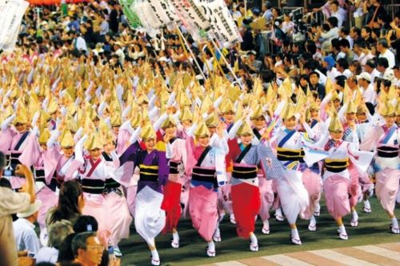
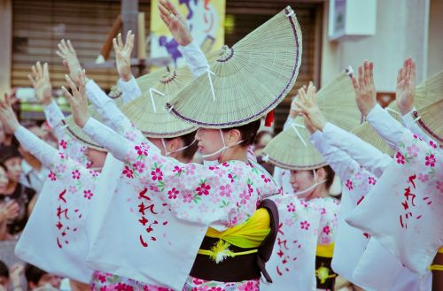
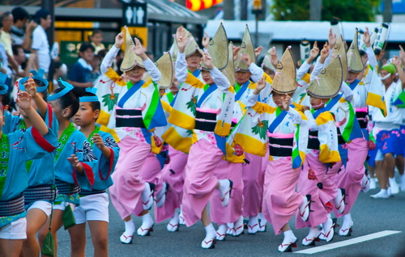
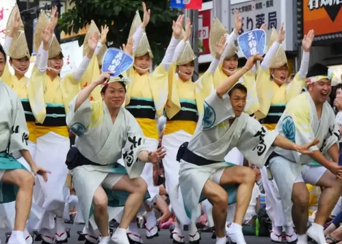

Awa odori festival
เทศกาลร่ายรำแห่งฤดูร้อน
อาวะโอโดริ คือการเต้นรำพื้นบ้านของจังหวัดโทคุชิมะ และยังหมายถึงงานเทศกาลเต้นรำที่ใหญ่ที่สุดของญี่ปุ่นด้วย งานนี้จัดขึ้นในช่วงโอบ้งซึ่งเชื่อกันว่าวิญญาณของผู้ที่จากไปแล้วจะกลับมายังบ้านเกิด อาวะโอโดริเป็นการร่ายรำเพื่อต้อนรับวิญญาณเหล่านั้นนั่นเอง เทศกาลอาวะโอโดริมีประวัติย้อนกลับไปถึง 400 ปีก่อนในโทคุชิมะ อาวะเป็นชื่อเรียกดั้งเดิมของจังหวัดโทคุชิมะ ส่วนโอโดริแปลว่าเต้นรำค่ะ Awa Dance Festival(งานเทศกาลร่ายรำอาวะ)
ปัดเป่าความร้อนในฤดูร้อนออกไป!
 Awa Dance Festival (งานเทศกาลร่ายรำอาวะ) คือ สัญลักษณ์ประจำฤดูร้อนของจ.โทคุชิมะใน ภูมิภาคชิโกกุ โดยมีประวัติความเป็นมาอันยาวนานมากกว่า 400 ปีถึงขนาดได้รับเลือกให้เป็น 1 ใน 3 งานร่ายรำบงโอโดริที่ใหญ่ที่สุดของญี่ปุ่นคู่กับ “คุโจโอโดริ” ของจ.กิฟุและ “นิชิโมนาอิโนะบ้งโอโดริ” ของจ.อาคิตะเลยทีเดียว บรรยากาศการร่ายรำของเหล่าชาย-หญิงตามทำนองเพลงที่ร้องว่า “การร่ายรำอันบ้าบอที่ดูบ้าบอ พวกเราล้วนต่างบ้าบอ งั้นทำไมพวกเราไม่มาร่ายรำด้วยกันล่ะ?” ดูคึกคักสุดๆ รับรองได้เลยว่ายิ่งดูยิ่งสนุกอย่างแน่นอน
ใครไปร่วมงานได้บ้าง?
 เนื้อเพลงของอาวะโอโดรินั้นมีท่อนหนึ่งที่ร้องว่า
"เจ้าคนบ้าที่มาดูคนบ้าเต้นรำ
เป็นคนบ้าด้วยกันจะไม่เต้นรำด้วยกันได้อย่างไร"งานนี้เป็นงานที่ทุกคนสามารถร่วมเต้นรำทำเพลงด้วยกันได้
จึงมีการเตรียมเวทีสำหรับคนที่มาเข้าร่วมงานไว้ด้วย
การแต่งกาย
นักเต้นในเสื้อผ้าสีสันสดใสจะมาแสดงการร่ายรำอันมีเอกลักษณ์กันอย่างทรงพลัง สิ่งที่เป็นไฮไลท์ที่สุดก็คือเสื้อผ้าเครื่องแต่งกายของบรรดานักเต้นและวงดนตรีในงานนั่นเอง
ประเภทของการร่ายรำอาวะโอโดริ
 การร่ายรำอาวะโอโดริมีทั้งหมด 2 ประเภทประกอบด้วย โอโตโกะโอโดริ การร่ายรำของเหล่าผู้ชายในชุดยูกาตะหรือฮัปปิ (※1) และ อนนะโอโดริ การร่ายรำของเหล่าผู้หญิงสวมหมวกอามิกาสะในชุดยูกาตะ โดยเฉพาะอนนะโอโดริของเหล่าผู้หญิงในชุดยูกาตะสีแดงและชมพูนั้นดูเปล่งประกายงดงามสุดๆ ซึ่งนับเป็นไฮไลท์ประจำงานเทศกาลเลยก็ว่าได้
วันเวลาและสถานที่จัดงาน
เราสามารถชมการร่ายรำอาวะโอโดรินี้ได้จากทั่วทั้งจ.โทคุชิมะ, นากาเมกุโระ และวัดโคเอ็นจิในโตเกียวก็จริง
แต่งานเทศกาลร่ายรำอาวะแห่งเมืองโทคุชิมะ ที่จัดขึ้นภายในเมืองโทคุชิมะนั้นโด่งดังที่สุดเลยก็ว่าได้
งานนี้จัดขึ้นในช่วง โอบ้ง
ระหว่างวันที่ 12 - 15 สิงหาคมของทุกปี โดยจะมีการแสดงร่ายรำของนักเต้นกว่า 1
แสนคนและมีผู้คนเดินทางมาชมมากกว่า 1 ล้านคนเลยทีเดียว